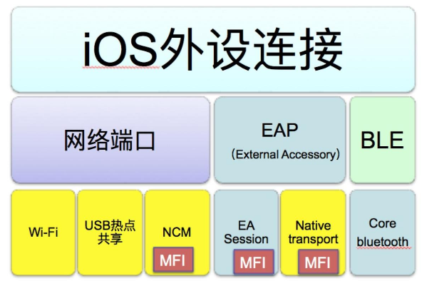

一般iOS开发者做APP开发大部分时候都是通过Http(s)请求跟后台服务器打交道，做一些信息展示和用户交互。很少涉及到去跟外部硬件设备连接的开发。随着近年来车联网和物联网的兴起，智能家居和智能硬件的逐步火热，越来越多的app被开发出来，用来跟硬件设备进行来连接，获取硬件相关信息展示或者发送指令控制硬件来提供服务。故本文就针对iOS的app如何跟外部设备进行连接通信这个问题跟大家交流一下。本文原创，欢迎转载，转载请注明出处，如有不正确的地方恳请各位看官指正。

第一类是通过网络端口，建立Socket使用TCP/IP协议族进行通信，天然支持多通道，想要几个通道就建几个socket就行了。它主要有三种方式，第一种方式是Wi-Fi连接，优点是：简单，不需要集成MFi芯片，只要对应的硬件有无线网卡，然后手机和硬件连接到同一个局域网中就可以使用socket通过网络协议通信了。缺点也很明显：
（1)无线连接信号容易受到干扰，不太稳定，容易断开；
（2）如果硬件使用的场合没有公共wifi，就需要手机自建热点共享，硬件进行热点接入，操作步骤较多，对用户来说学习使用成本较高，并且热点共享要求手机本身的数据移动网络是稳定的，在没有移动数据网络信号的地方，热点无法建立。
.
需要先打开个人热点共享；
使用网络端口的第三种方式是NCM，就是把USB端口虚拟成标准的网络端口，然后手机和外设就能通过有线网络直连了，可以理解成手机和外设通过一跟网线连起来了，然后就可以用socket通过TCP，UDP进行通信了。它的优点是：有线连接，非常稳定，带宽足够；也不依赖移动网络信号；但是它的缺点就是：需要集成MFI芯片并进行MFI认证，有一定门槛。更变态的是这么好的一种方式，目前苹果只提到可以在它自己的CarPlay使用，其他硬件并没有说禁止或者允许使用。如果硬件使用NCM跟iOS系统的App通信，可能通过MFI认证是有风险的。
关于如何使用Socket进行TCP、UDP连接，推荐github上的开源项目CocoaAsyncSocket。
.
iOS App连接外部硬件的第二大类是EAP，全拼是External Accessory Protocol，外部设备协议。这个是苹果推荐使用的外设连接方式。需要外设集成MFI芯片进行MFI认证。手机端开发相对简单，只要集成 iOS系统提供的一个框架ExternalAccessory.framework，并且在info.plist中配置好协议字符串(Supported external accessory protocols），当iOS 设备通过USB线或者蓝牙连接到对应硬件时，iOS系统会把符合MFI认证要求的外设抽象成了一个流对象，App通过指定的协议字符串来创建一个EASession类的实例来访问到该流对象，就能通过NSInputStream和NSOutputStream跟硬件件进行通信了。它有两种模式，一种是叫EASession的模式，它带宽相对较低，但是允许同时通过多个协议字符串创建多个会话，也就是说直接支持多个通道；另外一种是Native Transport的模式，这种模式的优点是带宽足够大，理论值是100MB以上，但是不支持多通道，如果业务层需要支持多数据通道的话需要App自己进行通道的复用与拆分，并且Native Transport需要iPhone工作在USB host模式，硬件需要支持USB 模式切换。
关于如何使用EAP跟外部设备进行通信，可以参考苹果官方的Demo进行入门和学习。
.
第三大类就是BLE，低功耗蓝牙，是iOS7.0以后才支持的连接方式。它的优点是不需要集成MFI芯片做认证，功耗低，手机端开发也相对简单，集成iOS系统提供的CoreBluetooth.framework就行。缺点是：带宽很低，一般适合于只需要传输少量数据的场景。比如前两年非常火爆的各种所谓智能硬件，像智能水杯，智能体重计，运动手环等，都是采用这种连接方式。
关于如何使用BLE进行硬件连接，可以参考本人在github的一个小开源项目（https://github.com/luoxubin/BlueTooth4.0）。另外本人自己业余时间也做过一个BLE连接外设的App-裤宝（名字有创意吧，裤子里的宝贝，是跟我另外两个小伙伴一起做的创业项目，目前该项目黄了， 不过app还在线上，AppStore里搜索“裤宝”可以下载。
.
总结一下，图中带MFI字样的表示该连接方式需要硬件集成MFi芯片，做MFi认证。关于苹果的MFI认证，对iOS开发中来说其实是一个比较陌生并且繁琐的topic，原因如下：
.
（1）网上鲜有资料，Google基本上查不到。 因为MFi认证是由硬件生产商主导进行的，苹果首先对硬件生产商的实力（质量，信誉，生产规模）有很苛刻的要求，满足要求的才有进行MFI认证的资格。满足MFi认证资格要求的硬件生产商，提交了MFi产品计划后才能得到苹果MFi开发的官方文档，这个文档是带水印的，不允许外泄；
（2）MFi认证周期很长，过程也很复杂；
（3）苹果官方沟通渠道很窄，电话打不通，邮件回复不及时。